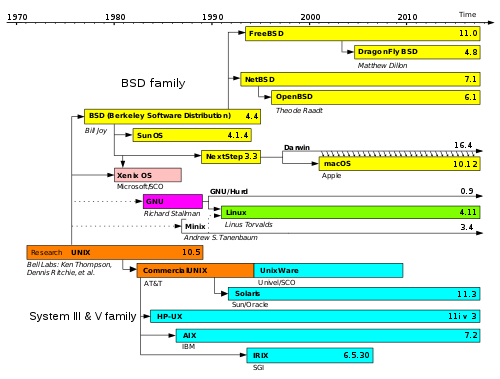
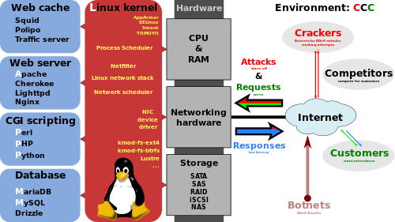
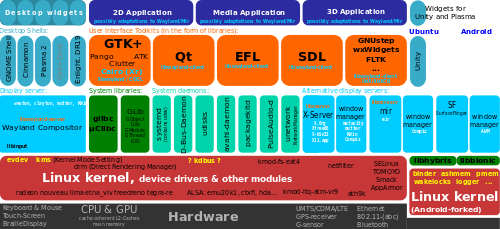

1. Linux [Linux] [1] [2]¶
1.1. introduction to Linux.¶
| [Linux] | https://www.kernel.org/ |
| [1] | https://www.kernel.org/ |
| [2] | https://en.wikipedia.org/wiki/Linux |
关于Linux内核
什么是Linux？ Linux是Unix操作系统的克隆版，由Linus Torvalds在整个网络上由黑客松散团队协助编写。它的目标是 符合POSIX和单一UNIX规范。
它具备您在现代成熟的Unix中所期望的所有功能，包括真正的多任务处理，虚拟内存，共享库，需求加载，共享的写时复制可执行文件，正确的内存管理以及包括IPv4和IPv6的多层网络。
虽然最初是为基于32位x86的个人电脑（386或更高版本）开发的，但现在Linux还可以运行在众多其他处理器体系结构上，包括32位和64位两种版本
Linux是一个家庭的自由开放源码软件 操作系统围绕内置Linux内核。通常，Linux 以桌面和服务器使用的称为Linux 发行版（或简称发行版）的形式打包。Linux分发的定义组件是Linux内核，[11]的操作系统内核首次于1991年9月17日由Linus Torvalds发布.
Linux最初是为基于英特尔x86架构的个人电脑开发的，但后来被移植到比其他任何操作系统更多的平台上。由于智能手机上基于Linux内核的Android操作系统的主导地位，Linux拥有所有通用操作系统中最大的安装基础。Linux也是服务器和其他大型计算机等大型铁系统的主要操作系统，也是TOP500上唯一使用的操作系统 超级计算机（自2017年11月以来，逐渐淘汰所有竞争对手）。它被大约2.3％的台式电脑所使用。运行基于Linux内核的Chrome OS的Chromebook在美国K-12教育市场占据主导地位，占美国300美元以下笔记本电脑销售额的近20％。Linux也运行在嵌入式系统上 - 这些设备的操作系统通常内置于固件中，并且非常适合系统。这包括TiVo和类似的DVR设备，网络路由器，设施自动化控制，电视机，视频游戏控制台和智能手表。许多智能手机和平板电脑都运行Android和其他Linux衍生产品。
Linux的发展是免费和开源软件协作最突出的例子之一。任何人都可以根据其各自的许可条款（如GNU通用公共许可证）使用，修改和分发基础源代码（商业或非商业）。
一些最流行和主流的Linux发行版是Arch Linux，CentOS，Debian，Fedora，Gentoo Linux，Linux Mint，Mageia，openSUSE和Ubuntu，以及红帽企业Linux和SUSE Linux Enterprise Server。发行版包括Linux内核，支持实用程序和库，其中许多是由GNU项目提供的，通常还有大量的应用软件来满足分配的预期用途。桌面Linux发行版包括一个窗口系统，如X11，Mir或Wayland实现，以及一个附带的桌面环境，如GNOME或KDE Plasma ; 某些发行版还可能包含占用资源较少的桌面，如LXDE或Xfce。打算在服务器上运行的分发可能会忽略标准安装中的所有图形环境，而是包含其他软件来设置和运行解决方案堆栈，例如LAMP。由于Linux可以自由再分发，任何人都可以为任何预期用途创建分发。许多Linux发行版使用名称中的“Linux”这个词。在自由软件基金会使用名称“ GNU / Linux的”来指代操作系统家族，以及具体的分布，强调的是大多数Linux发行版不只是Linux内核，他们的共同点不仅内核，还有许多公用事业和图书馆，其中很大一部分来自GNU项目。
  | Author: | zjz |
|---|---|
| Date: | 2018-03 |